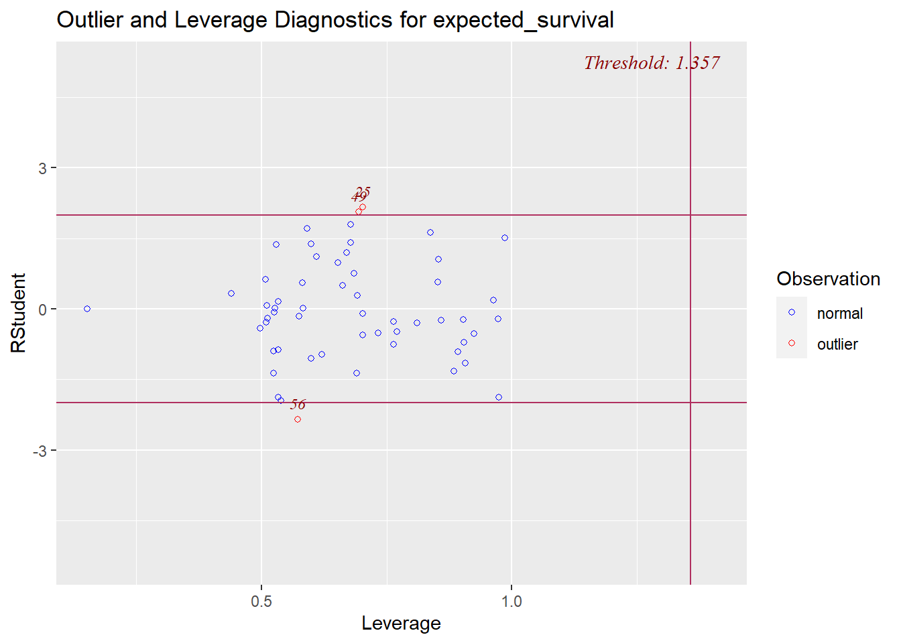

Code
# Find the index position of the target feature
target_name <- "expected_survival"
target_index <- grep(target_name,
colnames(train_data))In the previous \(Dataset\) chapter, we renamed the variables to be more significant, and easier to make inference. Moreover, we imputed the missing values with the Mean.
It is important to Mean-Center the data prior to PCA model building to ensure the first Principal Component is in the direction of maximum variance.
Standardization produces Mean, \(\mu\)= 0, and Variance, \(\sigma\) = 1.
We can rewrite this as:
\[ Z \sim N(0,1) \]
# Find the index position of the target feature
target_name <- "expected_survival"
target_index <- grep(target_name,
colnames(train_data))# Standardization Numerical Features
train_data_sc <- scale(train_data[, -target_index])# Plot a boxplot to visualize potential outliers
boxplot(train_data, main = "Outliers Detection",
col = "steelblue")
# Dependent Variable outliers
train_data %>%
ggplot(aes(y=expected_survival)) +
geom_boxplot(fill="steelblue", alpha=0.75) +
xlab("Expected Survival")+
ylab("")+
ggtitle("Dependent Variable Outliers")
set.seed(my_seed)
# Fit regression model
ordinary_model <- lm(expected_survival ~ ., data = train_data)
# Print the model summary
summary(ordinary_model)
# Residual Diagnostics
ols_plot_resid_lev(ordinary_model)
After removing one outlier from the dataset, we discovered that the final results produced minimal variability. Therefore, we decided to present a model that captures all the data points’ information; thus, no observations will be removed from the final model.
# No Outliers subset
no_outliers_df <- slice(train_data, -c(56))
set.seed(my_seed)
# Fit regression model
no_outliers_model <- lm(expected_survival ~ ., data = no_outliers_df)
# Print the model summary
summary(no_outliers_model)
# Residual Diagnostics
ols_plot_resid_lev(no_outliers_model)
Multicollinearity is present in the data set.
Correlated features were identified using a threshold = 0.30.
# Calculate correlations and round to 2 digits
corr_matrix <- cor(train_data_sc)
corr_matrix <- round(corr_matrix, digits = 2)
# Print names of highly correlated features; threshold > 0.30
high <- findCorrelation(corr_matrix, cutoff = 0.30, names = TRUE)
# table format
kbl(high, caption = "Highly Correlated Features") %>%
kable_paper(bootstrap_options = "hover", full_width = F)| x |
|---|
| expected_transfusion |
| better_infection |
| expected_hospitalization |
| expected_hospital_readmission |
| expected_fistula |
| prevalent_transplant_waitlist_expected |
| incident_transplant_waitlist_expected |
| expected_infection |
| worse_survival |
| incident_transplant_waitlist_better |
| better_hospital_readmission |
| worse_transfusion |
| worse_hospital_readmission |
| worse_fistula |
| incident_transplant_waitlist_worse |
| better_fistula |
| prevalent_transplant_waitlist_better |
| better_survival |
| worse_infection |
| phosphorus (5.6 - 7) Mg |
| prevalent_transplant_waitlist_worse |
| phosphorus (3.5 - 4.5) Mg |
| phosphorus > 7Mg |
| better_transfusion |
| Hgb 10g |
| hypercalcemia_calcium > 10.2Mg |
| pediatric_nPCR |
| long_term_catheter |
set.seed(my_seed)
# Fit a multiple linear regression model
full_model <- lm(expected_survival ~ ., data = train_data)
# Print a summary of the regression model
tab_model(full_model, title = "Full Model Regression",
string.p="P-value", string.stat = "T-score",
string.se = "Std. Error",
string.resp = "Response",
show.se=T, show.stat = T)| expected_survival | |||||
| Predictors | Estimates | Std. Error | CI | T-score | P-value |
| (Intercept) | 93.71 | 41.88 | 5.73 – 181.69 | 2.24 | 0.038 |
| better transfusion | 1.04 | 0.75 | -0.53 – 2.62 | 1.39 | 0.181 |
| expected transfusion | 0.00 | 0.03 | -0.07 – 0.07 | 0.03 | 0.974 |
| worse transfusion | 0.13 | 0.08 | -0.03 – 0.29 | 1.76 | 0.096 |
| better infection | -0.27 | 0.09 | -0.46 – -0.07 | -2.92 | 0.009 |
| expected infection | -0.04 | 0.06 | -0.17 – 0.09 | -0.57 | 0.574 |
| worse infection | -0.11 | 0.27 | -0.68 – 0.46 | -0.41 | 0.687 |
| Kt v 1 2 | 0.25 | 0.25 | -0.28 – 0.78 | 0.99 | 0.335 |
| Kt v 1 7 | -0.00 | 0.05 | -0.11 – 0.11 | -0.00 | 0.996 |
| pedriatic Kt v 1 2 | -0.04 | 0.03 | -0.11 – 0.03 | -1.21 | 0.241 |
| pediatric Kt v 1 8 | -0.02 | 0.01 | -0.04 – 0.00 | -1.89 | 0.076 |
| pediatric nPCR | 0.04 | 0.03 | -0.01 – 0.10 | 1.75 | 0.097 |
| better fistula | -0.18 | 0.11 | -0.41 – 0.04 | -1.73 | 0.101 |
| expected fistula | 0.01 | 0.08 | -0.15 – 0.16 | 0.08 | 0.935 |
| worse fistula | -0.03 | 0.11 | -0.25 – 0.19 | -0.28 | 0.780 |
| long term catheter | 0.31 | 0.07 | 0.16 – 0.47 | 4.19 | 0.001 |
| hypercalcemia calcium > 10 2Mg |
-0.19 | 0.09 | -0.37 – -0.00 | -2.13 | 0.048 |
| phosphorus < 3 5Mg | 0.35 | 0.48 | -0.66 – 1.36 | 0.73 | 0.476 |
| phosphorus (3 5 - 4 5) Mg | -1.73 | 0.46 | -2.71 – -0.76 | -3.73 | 0.002 |
| phosphorus (4 6 - 5 5) Mg | -1.36 | 0.46 | -2.33 – -0.40 | -2.97 | 0.008 |
| phosphorus (5 6 - 7) Mg | -0.80 | 0.44 | -1.72 – 0.12 | -1.82 | 0.085 |
| phosphorus > 7Mg | -1.44 | 0.46 | -2.41 – -0.48 | -3.15 | 0.005 |
| better hospitalization | 0.08 | 0.32 | -0.59 – 0.76 | 0.26 | 0.797 |
| expected hospitalization | 0.70 | 0.15 | 0.38 – 1.03 | 4.55 | <0.001 |
| worse hospitalization | 0.52 | 0.22 | 0.05 – 0.98 | 2.34 | 0.031 |
| better hospital readmission |
0.38 | 0.24 | -0.13 – 0.88 | 1.55 | 0.139 |
| expected hospital readmission |
0.31 | 0.13 | 0.03 – 0.60 | 2.34 | 0.031 |
| worse hospital readmission |
0.09 | 0.24 | -0.41 – 0.59 | 0.39 | 0.704 |
| better survival | -0.57 | 0.15 | -0.88 – -0.27 | -3.94 | 0.001 |
| worse survival | -0.91 | 0.14 | -1.20 – -0.62 | -6.64 | <0.001 |
| incident transplant waitlist better |
0.01 | 0.13 | -0.27 – 0.29 | 0.09 | 0.926 |
| incident transplant waitlist expected |
0.03 | 0.04 | -0.05 – 0.12 | 0.82 | 0.421 |
| incident transplant waitlist worse |
0.31 | 0.12 | 0.06 – 0.56 | 2.61 | 0.018 |
| prevalent transplant waitlist better |
0.15 | 0.11 | -0.08 – 0.38 | 1.36 | 0.191 |
| prevalent transplant waitlist expected |
0.04 | 0.10 | -0.17 – 0.25 | 0.41 | 0.690 |
| prevalent transplant waitlist worse |
0.01 | 0.19 | -0.39 – 0.40 | 0.03 | 0.975 |
| Hgb 10g | -0.10 | 0.05 | -0.20 – -0.00 | -2.14 | 0.046 |
| Hgb 12g | -0.36 | 0.66 | -1.75 – 1.04 | -0.54 | 0.597 |
| Observations | 56 | ||||
| R2 / R2 adjusted | 1.000 / 1.000 | ||||
We will focus on Singular Value Decomposition which is a classic approach for PCA analysis.
Singular Value Decomposition is a factorization technique used in linear algebra to decompose a matrix into three matrices.
U: A matrix whose columns are the left singular vectors of the original matrix.
D: A diagonal matrix whose entries are the singular values of the original matrix.
V: A matrix whose columns are the right singular vectors of the original matrix.
The SVD is closely related to the eigenvalue decomposition (EVD), which is another factorization technique used in linear algebra. While the EVD can only be applied to square matrices, the SVD can be applied to any matrix, including rectangular matrices. The SVD is also more numerically stable than the EVD, making it a preferred method for many applications.
# Apply PCA using prcomp()
data_pca <- prcomp(train_data_sc, center = TRUE, scale. = TRUE)
pca_summ <- summary(data_pca)$importance
# table format
kbl(pca_summ, caption = "Pricipal Components Analysis") %>%
kable_paper("hover", full_width = F)| PC1 | PC2 | PC3 | PC4 | PC5 | PC6 | PC7 | PC8 | PC9 | PC10 | PC11 | PC12 | PC13 | PC14 | PC15 | PC16 | PC17 | PC18 | PC19 | PC20 | PC21 | PC22 | PC23 | PC24 | PC25 | PC26 | PC27 | PC28 | PC29 | PC30 | PC31 | PC32 | PC33 | PC34 | PC35 | PC36 | PC37 | |
|---|---|---|---|---|---|---|---|---|---|---|---|---|---|---|---|---|---|---|---|---|---|---|---|---|---|---|---|---|---|---|---|---|---|---|---|---|---|
| Standard deviation | 3.885383 | 1.87172 | 1.837743 | 1.748684 | 1.422673 | 1.250784 | 1.127957 | 1.093315 | 0.9449088 | 0.9081311 | 0.8185497 | 0.7790474 | 0.6814511 | 0.6366325 | 0.5710251 | 0.5054679 | 0.5017618 | 0.4884469 | 0.4624706 | 0.4169063 | 0.3533773 | 0.3247406 | 0.2883674 | 0.2604156 | 0.2259012 | 0.2149077 | 0.1982033 | 0.166981 | 0.126791 | 0.1091444 | 0.083804 | 0.0509429 | 0.0316654 | 0.0287096 | 0.0143347 | 0.0080567 | 0.0049179 |
| Proportion of Variance | 0.408010 | 0.09468 | 0.091280 | 0.082650 | 0.054700 | 0.042280 | 0.034390 | 0.032310 | 0.0241300 | 0.0222900 | 0.0181100 | 0.0164000 | 0.0125500 | 0.0109500 | 0.0088100 | 0.0069100 | 0.0068000 | 0.0064500 | 0.0057800 | 0.0047000 | 0.0033800 | 0.0028500 | 0.0022500 | 0.0018300 | 0.0013800 | 0.0012500 | 0.0010600 | 0.000750 | 0.000430 | 0.0003200 | 0.000190 | 0.0000700 | 0.0000300 | 0.0000200 | 0.0000100 | 0.0000000 | 0.0000000 |
| Cumulative Proportion | 0.408010 | 0.50269 | 0.593970 | 0.676610 | 0.731320 | 0.773600 | 0.807990 | 0.840290 | 0.8644200 | 0.8867100 | 0.9048200 | 0.9212200 | 0.9337800 | 0.9447300 | 0.9535400 | 0.9604500 | 0.9672500 | 0.9737000 | 0.9794800 | 0.9841800 | 0.9875500 | 0.9904000 | 0.9926500 | 0.9944800 | 0.9958600 | 0.9971100 | 0.9981700 | 0.998930 | 0.999360 | 0.9996800 | 0.999870 | 0.9999400 | 0.9999700 | 0.9999900 | 1.0000000 | 1.0000000 | 1.0000000 |
The values in `data_pca$x` are the coordinates of each observation in the new principal component space. These coordinates are the scores for each observation along each principal component.
The eigenvectors of the covariance, or correlation matrix of the data represent the directions of maximum variance, or information in the dataset.
# Principal Component scores vector
pc_scores <- data_pca$x
# Std Deviation of Components
component_sdev <- data_pca$sdev
# Eigenvector, or Loadings
pc_loadings <- data_pca$rotation
# Mean of variables
component_mean <- data_pca$center
# Scaling factor of Variables
component_scale <- data_pca$scale# Access the loadings for the first two principal components
loadings_first_two_components <- pc_loadings[, 1:2]
# Print the loadings for the first two principal components
# print(loadings_first_two_components)
# table format
kbl(loadings_first_two_components,
caption = "Loadings of First Two Principal Components") %>%
kable_paper("hover", full_width = F)| PC1 | PC2 | |
|---|---|---|
| better_transfusion | 0.0505988 | 0.0150714 |
| expected_transfusion | 0.2535655 | -0.0214288 |
| worse_transfusion | 0.2058083 | -0.1647359 |
| better_infection | 0.2526037 | -0.0073418 |
| expected_infection | 0.2455150 | -0.0651723 |
| worse_infection | 0.1381077 | 0.0637021 |
| Kt_v_1.2 | 0.0030888 | 0.0081176 |
| Kt_v_1.7 | -0.0077628 | 0.0443543 |
| pedriatic_Kt_v_1.2 | -0.0635840 | 0.0527312 |
| pediatric_Kt_v_1.8 | -0.0139162 | 0.0027817 |
| pediatric_nPCR | -0.0394256 | 0.0768242 |
| better_fistula | 0.1701351 | 0.1848886 |
| expected_fistula | 0.2521168 | -0.0557510 |
| worse_fistula | 0.1932023 | -0.0481451 |
| long_term_catheter | -0.0054340 | 0.0408538 |
| hypercalcemia_calcium > 10.2Mg | -0.0276031 | 0.1049092 |
| phosphorus < 3.5Mg | 0.0161465 | 0.3758879 |
| phosphorus (3.5 - 4.5) Mg | 0.0419720 | 0.4257995 |
| phosphorus (4.6 - 5.5) Mg | 0.0888141 | 0.2665451 |
| phosphorus (5.6 - 7) Mg | -0.0954250 | -0.3297313 |
| phosphorus > 7Mg | -0.0293097 | -0.4399827 |
| better_hospitalization | 0.1554829 | 0.0397692 |
| expected_hospitalization | 0.2534938 | -0.0352946 |
| worse_hospitalization | 0.1862741 | -0.1047590 |
| better_hospital_readmission | 0.2100007 | -0.0462079 |
| expected_hospital_readmission | 0.2537239 | -0.0414170 |
| worse_hospital_readmission | 0.2009955 | -0.0432176 |
| better_survival | 0.1522860 | 0.1688318 |
| worse_survival | 0.2288120 | -0.0662229 |
| incident_transplant_waitlist_better | 0.2015728 | 0.1512873 |
| incident_transplant_waitlist_expected | 0.2498798 | -0.0578246 |
| incident_transplant_waitlist_worse | 0.1912998 | -0.0198540 |
| prevalent_transplant_waitlist_better | 0.1617720 | 0.1762916 |
| prevalent_transplant_waitlist_expected | 0.2500769 | -0.0702750 |
| prevalent_transplant_waitlist_worse | 0.1201731 | -0.2284720 |
| Hgb 10g | -0.0298792 | -0.0803709 |
| Hgb 12g | -0.0005837 | 0.1764813 |
# Proportion of variance explained by each PC
variance_explained <- component_sdev^2 / sum(component_sdev^2)
# Cumulative proportion of variance explained
cumulative_variance_explained <- cumsum(variance_explained)
# Create a data frame with an index column
cumulative_variance_explained_df <- data.frame(
PC = 1:length(cumulative_variance_explained),
Cumulative_Variance_Explained = cumulative_variance_explained
)
# Create a kable table with an index column
kbl(cumulative_variance_explained_df, align = "c",
caption = "PCA: Cumulative Variance Explained") %>%
kable_paper("hover", full_width = F)| PC | Cumulative_Variance_Explained |
|---|---|
| 1 | 0.4080054 |
| 2 | 0.5026901 |
| 3 | 0.5939685 |
| 4 | 0.6766143 |
| 5 | 0.7313169 |
| 6 | 0.7735996 |
| 7 | 0.8079857 |
| 8 | 0.8402922 |
| 9 | 0.8644234 |
| 10 | 0.8867126 |
| 11 | 0.9048213 |
| 12 | 0.9212244 |
| 13 | 0.9337751 |
| 14 | 0.9447292 |
| 15 | 0.9535419 |
| 16 | 0.9604473 |
| 17 | 0.9672517 |
| 18 | 0.9736998 |
| 19 | 0.9794804 |
| 20 | 0.9841779 |
| 21 | 0.9875530 |
| 22 | 0.9904031 |
| 23 | 0.9926506 |
| 24 | 0.9944835 |
| 25 | 0.9958627 |
| 26 | 0.9971109 |
| 27 | 0.9981727 |
| 28 | 0.9989263 |
| 29 | 0.9993607 |
| 30 | 0.9996827 |
| 31 | 0.9998725 |
| 32 | 0.9999427 |
| 33 | 0.9999698 |
| 34 | 0.9999920 |
| 35 | 0.9999976 |
| 36 | 0.9999993 |
| 37 | 1.0000000 |
# Retain components that explain a percentage of the variance
num_components <- which(cumulative_variance_explained >= 0.86)[1]
# Select the desired number of principal components
selected_pcs <- pc_scores[, 1:num_components]
# table format
kbl(selected_pcs, caption = "Components Explaining 86% Variance") %>%
kable_paper("hover", full_width = F)| PC1 | PC2 | PC3 | PC4 | PC5 | PC6 | PC7 | PC8 | PC9 |
|---|---|---|---|---|---|---|---|---|
| -3.1377897 | 0.7718023 | -0.7364361 | -0.9222354 | -0.3592745 | 0.3854256 | 1.7644646 | 0.7137464 | -1.2776384 |
| 0.9108769 | -1.3736147 | -0.8906656 | -0.0460364 | 0.0227857 | 0.3267234 | 1.9094604 | 0.3202683 | 0.3157517 |
| -1.3650210 | -1.7656420 | -0.1449229 | 0.2591892 | -1.2856912 | -0.3761635 | -0.7856081 | -0.9203682 | -1.2625636 |
| -3.0594171 | 0.3347835 | -0.0140627 | -0.1395400 | 0.0920259 | -0.2824615 | -0.1286075 | 0.1373214 | 0.0779667 |
| -0.1990728 | -0.2073473 | -0.7148617 | -1.3756229 | -1.1992738 | 0.0319372 | 0.7499437 | 0.7159942 | -0.1954117 |
| 15.2031917 | 2.6187078 | -7.7362757 | 4.0519492 | -0.8244373 | -2.8218455 | -0.3936859 | 0.7539658 | 0.1235878 |
| -1.1596436 | 1.1215513 | -0.7111982 | -0.6842368 | 0.2285957 | -0.3821015 | -0.5147689 | -1.3731284 | 0.5559771 |
| -1.7566946 | 2.4464045 | 0.2335806 | -0.7871242 | -0.1098217 | -1.0603359 | -0.1434002 | -1.6411470 | 1.1461921 |
| -2.5604524 | 1.0784921 | -0.0207081 | -0.0018005 | -0.2473781 | 1.1930091 | -0.1233726 | 1.6484088 | 1.1222846 |
| -2.2725299 | 0.7670027 | -0.0552466 | -1.0045062 | 2.4430230 | -1.8092342 | 1.3011293 | 0.0401768 | 0.7853498 |
| 10.2100889 | -3.0950590 | 5.5631450 | -2.7078659 | -3.2328143 | -1.4787809 | -1.0194980 | 0.3945866 | 0.0182378 |
| 5.1285806 | -1.7705080 | 1.7849024 | -0.1628373 | 0.5175815 | -0.3671515 | 1.2736564 | 0.3838594 | -0.1914313 |
| -3.4958456 | -4.4206145 | -3.1425366 | 0.0403879 | -0.7927574 | 0.4216563 | 0.1086626 | -1.1395035 | -1.5790601 |
| -1.7133698 | 0.8229558 | -1.9662884 | -1.0870709 | 0.7504517 | 0.4356704 | 1.1010341 | 0.8853389 | -1.1905684 |
| -1.9510677 | 0.9075154 | -0.3458658 | -1.4707099 | -0.7734845 | -0.7810153 | -1.0115731 | -1.4774092 | 0.2214668 |
| -2.6295662 | 0.9148916 | -0.5263343 | -1.3484250 | -0.9348044 | 0.5181241 | 0.3569534 | 0.8863304 | -0.4487563 |
| 4.7463371 | 0.3145849 | 2.3709067 | -0.2527907 | 0.8329038 | 1.4290393 | -0.8492266 | 0.0127759 | -0.0479321 |
| 0.3868186 | -0.9290480 | 0.6870479 | -0.6117407 | 1.5373645 | -0.1112597 | 0.2264854 | 0.7690724 | -0.8384539 |
| -1.6766975 | 0.2849814 | -0.9841717 | -1.8133094 | -0.8135593 | 0.7518177 | 0.8449809 | -0.2604539 | 0.7892914 |
| -0.7344809 | -1.3221832 | 0.3700134 | -0.8447518 | 2.0552875 | -1.6018430 | 0.7570709 | -1.1866192 | 1.6751239 |
| 0.9392629 | -0.6999002 | -0.1398971 | -0.5978190 | -0.0202742 | -0.0046066 | 1.3170214 | 0.4943799 | 0.4745508 |
| -0.8326091 | 1.5873900 | -0.7312132 | 0.2909738 | 0.1198711 | 1.1099887 | -1.6454997 | 1.1311883 | -0.0448494 |
| 0.8724526 | 1.0450589 | 0.2774674 | 0.2175331 | -0.6225776 | 0.5428863 | -0.2118465 | 0.9699361 | 1.6164516 |
| -2.7729541 | 0.5328232 | -0.3856903 | -0.9341356 | 0.8942833 | -2.7237010 | -0.4737826 | -2.6265900 | 1.1451031 |
| 2.0146426 | 0.0014092 | 0.6403391 | -0.6928613 | -0.1677441 | 0.4555104 | -0.3839944 | 0.2754172 | 1.0044779 |
| -1.1376241 | 0.6675783 | 0.0612084 | 0.2443656 | -0.4464729 | 0.9265126 | -0.6966456 | 0.9413536 | 0.1756666 |
| 0.1255818 | -0.9951099 | 1.1503301 | -0.4897114 | 0.7108447 | 1.3853968 | 0.0279190 | -0.3615046 | -0.4520737 |
| -3.6485929 | -5.1247186 | 0.0491353 | 6.3322243 | -1.4438097 | 1.4725602 | -0.7719285 | -0.9060429 | 2.9209180 |
| -0.3307121 | 0.2792500 | -0.0985286 | -0.3388161 | -0.5949725 | -0.5761172 | 2.0136967 | 0.0523509 | 0.9485121 |
| -3.1386137 | -2.4846797 | -2.0044101 | 1.0660871 | -0.5876560 | -0.0292388 | -0.7688927 | -0.0431936 | -0.9301881 |
| 1.8304255 | -0.8658605 | -0.6292113 | -0.2888060 | -0.3584875 | 1.1522352 | 1.4098797 | -0.2386853 | 0.1117135 |
| -2.6299851 | 1.8820427 | 1.4790294 | 1.5197494 | 0.1483736 | 0.9943300 | 1.0137957 | 1.7547477 | -0.2904433 |
| -1.9654200 | 1.4437373 | 0.4238846 | -1.4217265 | 0.3451714 | 0.1489449 | 0.2267297 | 0.8291785 | 0.0536881 |
| -2.9433777 | -0.4453328 | -0.1868586 | 0.0501090 | -0.3471249 | -0.3883622 | -1.8441399 | 0.4519791 | 0.3853069 |
| 1.9334685 | 4.2274223 | -1.5428934 | -0.8353730 | -0.5412400 | 2.3738903 | -0.2918646 | 0.2477794 | 0.0526010 |
| -1.4611450 | 0.5550813 | -1.4467003 | -0.2731715 | 0.4167732 | -0.3335461 | 0.0306027 | 1.0759571 | -0.1291712 |
| -1.6820407 | -0.9252976 | -0.3177451 | -0.2737214 | -0.7852027 | 0.2036093 | -0.4686659 | 0.5301653 | -0.4387959 |
| 6.7594616 | 3.6388154 | 1.0561806 | 2.3513560 | 2.4970276 | 3.4372138 | -1.4275829 | -3.6074887 | -1.6017664 |
| 3.4506790 | -1.1823990 | 2.5698976 | -1.1129112 | -0.0545837 | 1.4361263 | -0.6591486 | -1.0344806 | -0.1605174 |
| -1.0983772 | -1.5240688 | -0.5320049 | -0.4776692 | -0.9994538 | -0.8029728 | -0.1950495 | -1.6084279 | -0.6963662 |
| -1.9193470 | -0.0164551 | -1.0806222 | -0.5872369 | -0.6323995 | -0.2013531 | -1.3158037 | -1.3027041 | 0.1718491 |
| 3.4962356 | 1.5199168 | 1.3109252 | -0.3006568 | 2.5985228 | 1.0499071 | -0.2312533 | -0.0968956 | 0.8464087 |
| -0.2522021 | 3.0717753 | 2.1406708 | -1.9255173 | -2.2719070 | -3.4092680 | -2.1544399 | 0.2271081 | -1.2587036 |
| -3.0134705 | -0.6858242 | -1.1712394 | -0.8551069 | -0.4427579 | 0.8390545 | -1.0038833 | 0.4084708 | -0.1120669 |
| 0.3392488 | -0.5133004 | 0.0390852 | -0.1766429 | -0.5924015 | 1.0593312 | 1.1662958 | 0.5206737 | -0.3248169 |
| -2.1136312 | 2.6100442 | 0.5329815 | -0.8478182 | 0.0752051 | 0.1416388 | 1.0926584 | -0.3587873 | 1.3477511 |
| 1.3706778 | -2.9103581 | 1.0847512 | 1.3162617 | 6.1381170 | -2.1436312 | 0.9717056 | 0.1945909 | -1.2873357 |
| 13.0708364 | -2.7257219 | 0.4257482 | -0.4751807 | -0.7833509 | 0.5789047 | 0.9619705 | 0.5196446 | -0.2281873 |
| -2.6464920 | -0.3807107 | -0.6943621 | 1.0364694 | -0.9201876 | 0.4536396 | 0.2146447 | -0.6047946 | -0.7532037 |
| 1.7504813 | -0.1798441 | -0.2689162 | -0.3411297 | 0.6075488 | -0.7766731 | -0.0057791 | 0.2780510 | 1.5233228 |
| -3.3724826 | 3.5364587 | 5.3270569 | 7.7626747 | -2.3162679 | -1.7960963 | 2.1723591 | -0.1875083 | -1.1130574 |
| -3.1242143 | -1.0424453 | 0.8043718 | 2.1331197 | 2.8559268 | -0.9073336 | -3.9502108 | 3.0657322 | -0.2528970 |
| -1.0176612 | -1.6717692 | -1.8286252 | 0.3949605 | -0.4653415 | 0.8615778 | -0.2456807 | -0.1711005 | -0.3816624 |
| -0.3396014 | 0.7505473 | 0.9595715 | -0.3013952 | 0.5726009 | 0.0189473 | -0.0433297 | 0.0636949 | 0.6271370 |
| -2.2360197 | -0.6558765 | 0.7764559 | 0.2318055 | -0.2784866 | -0.3447923 | -0.0371004 | 0.7967515 | -1.0751694 |
| -3.1511256 | 0.1806651 | -1.0701944 | -0.4912051 | -0.2142891 | -0.6257239 | 0.7831426 | -1.3441626 | -1.6736004 |
PC1 explains 40.8% variance.
PC2 explains 9.5% variance.
fviz_eig(data_pca, addlabels = TRUE)
The correlation between a variable and a principal component (PC) is used as the coordinates of the variable on the PC. The representation of variables differs from the plot of the observations: The observations are represented by their projections, but the variables are represented by their correlations (Abdi and Williams 2010).
PC1 is represented in black which displays the longest distance of its projection.
PC2 is represented in blue which displays a shorter distance as expected.
fviz_pca_biplot(data_pca,
geom = c("point", "arrow"),
geom.var = "arrow")
The plot below is also known as variable correlation plots. It shows the relationships between all variables. It can be interpreted as follow:
Positively correlated variables are grouped together.
Negatively correlated variables are positioned on opposite sides of the plot origin (opposed quadrants).
The distance between variables and the origin measures the quality of the variables on the factor map. Variables that are away from the origin are well represented on the factor map.
# Control variable colors using their contributions
fviz_pca_var(data_pca, col.var = "contrib",
gradient.cols = c("white", "blue", "red"),
geom.var = "arrow",
ggtheme = theme_minimal())Top variable contribution for the first two principal components.
# Contributions of variables to PC1
pc2_contribution <- fviz_contrib(data_pca, choice = "var", axes = 1, top = 20)
# Modify the theme to rotate X-axis labels to 90 degrees
pc2_contribution +
theme(
axis.text.x = element_text(angle = 0),
plot.title = element_text(hjust = 0) # horizontal justification
) +
coord_flip() +
labs(title = "Contribution of Variables to PC1",
y = "Percentage Contribution",
x = "",
caption = "PC1 explains 40.8% variance") +
scale_y_continuous(labels = scales::percent_format(scale = 1,
accuracy = 1))# Contributions of variables to PC2
pc2_contribution <- fviz_contrib(data_pca, choice = "var", axes = 2, top = 12)
# Modify the theme to rotate X-axis labels to 90 degrees
pc2_contribution +
theme(
axis.text.x = element_text(angle = 0),
plot.title = element_text(hjust = 0) # horizontal justification
) +
coord_flip() +
labs(title = "Contribution of Variables to PC2",
y = "Percentage Contribution",
x = "",
caption = "PC2 explains 9.5% variance") +
scale_y_continuous(labels = scales::percent_format(scale = 1,
accuracy = 1))# reproducible random sampling
set.seed(my_seed)
# Create Target y-variable for the training set
y <- train_data$expected_survival
# Split the data into training and test sets
split <- sample.split(y, SplitRatio = 0.7)
training_set <- subset(train_data, split == TRUE)
test_set <- subset(train_data, split == FALSE) # Feature Scaling: Standardization
# Perform centering and scaling on the training and test sets
sc <- preProcess(training_set[, -target_index],
method = c("center", "scale"))
training_set[, -target_index] <- predict(
sc, training_set[, -target_index])
test_set[, -target_index] <- predict(sc, test_set[, -target_index])
# training_set[,-target_index] = scale(training_set[, -target_index])
# test_set[,-target_index] = scale(test_set[, -target_index])# Perform Principal Component Analysis (PCA) preprocessing on the training data
pca <- preProcess(training_set[, -target_index],
method = 'pca', pcaComp = 8)
# Apply PCA transformation to original training set
training_set <- predict(pca, training_set)
# Reorder columns, moving the dependent feature index to the end
training_set <- training_set[c(2:9, 1)]
# Apply PCA transformation to original test set
test_set <- predict(pca, test_set)
# Reorder columns, moving the dependent feature index to the end
test_set <- test_set[c(2:9, 1)]# reproducible random sampling
set.seed(my_seed)
# Fit a multiple linear regression model
pca_full_model <- lm(expected_survival ~ ., data = training_set)
# Print a summary of the regression model
# summary(pca_full_model)
# tab_model(pca_full_model, string.p="P-value", show.se="T")
tab_model(pca_full_model, title = "8 Principal Components Regression",
string.p="P-value", string.stat = "T-score",
string.se = "Std. Error",
string.resp = "Response",
show.se=T, show.stat = T)| expected_survival | |||||
| Predictors | Estimates | Std. Error | CI | T-score | P-value |
| (Intercept) | 97.05 | 2.84 | 91.25 – 102.85 | 34.19 | <0.001 |
| PC1 | 29.40 | 0.71 | 27.95 – 30.86 | 41.22 | <0.001 |
| PC2 | 4.59 | 1.33 | 1.87 – 7.31 | 3.44 | 0.002 |
| PC3 | -1.11 | 1.64 | -4.46 – 2.24 | -0.68 | 0.504 |
| PC4 | 4.99 | 1.75 | 1.42 – 8.56 | 2.85 | 0.008 |
| PC5 | -3.27 | 2.25 | -7.86 – 1.31 | -1.46 | 0.156 |
| PC6 | 6.98 | 2.44 | 2.01 – 11.95 | 2.87 | 0.008 |
| PC7 | -6.60 | 2.56 | -11.83 – -1.37 | -2.58 | 0.015 |
| PC8 | 3.80 | 2.82 | -1.96 – 9.56 | 1.35 | 0.188 |
| Observations | 39 | ||||
| R2 / R2 adjusted | 0.983 / 0.979 | ||||
# Calculate PRESS
# cat("PRESS: ", PRESS(pca_full_model), "\n")
PRESS_8pc <- PRESS(pca_full_model)
# Calculate predicted R^2
# cat("Predicted R^2: ", pred_r_squared(pca_full_model), "\n")
R2_8pcs <- pred_r_squared(pca_full_model)
predict_8pc <- cbind(PRESS_8pc, R2_8pcs)
# Print PRESS, predicted R^2
# table format
kbl(predict_8pc, caption = "8 Principal Components Prediction Metrics") %>%
kable_paper("hover", full_width = F)| PRESS_8pc | R2_8pcs |
|---|---|
| 31662.39 | 0.9430373 |
# Create a subset with 2 principal components
significant_pcs = c(1,2,9)
train_pca <- training_set[, significant_pcs]
test_pca <- test_set[, significant_pcs]# reproducible random sampling
set.seed(my_seed)
# Fit a multiple linear regression model
reg_model <- lm(expected_survival ~ .,
data = train_pca)
# Print a summary of the regression model
# tab_model(reg_model)
tab_model(reg_model, title = "2 Principal Components Regression",
string.p="P-value", string.stat = "T-score",
string.se = "Std. Error",
string.resp = "Response",
show.se=T, show.stat = T)| expected_survival | |||||
| Predictors | Estimates | Std. Error | CI | T-score | P-value |
| (Intercept) | 97.05 | 3.58 | 89.78 – 104.32 | 27.07 | <0.001 |
| PC1 | 29.40 | 0.90 | 27.58 – 31.23 | 32.64 | <0.001 |
| PC2 | 4.59 | 1.68 | 1.18 – 8.00 | 2.73 | 0.010 |
| Observations | 39 | ||||
| R2 / R2 adjusted | 0.968 / 0.966 | ||||
# Calculate PRESS
# cat("PRESS: ", PRESS(reg_model), "\n")
PRESS_2pc <- PRESS(reg_model)
# Calculate predicted R^2
# cat("Predicted R^2: ", pred_r_squared(reg_model), "\n")
R2_2pc <- pred_r_squared(reg_model)
# Print 2PC prediction results
predict_2pc <- cbind(PRESS_2pc, R2_2pc)
# table format
kbl(predict_2pc, caption = "2 Principal Components Prediction Metrics") %>%
kable_paper("hover", full_width = F)| PRESS_2pc | R2_2pc |
|---|---|
| 25699.6 | 0.9537647 |
# reproducible random sampling
set.seed(my_seed)
y = train_pca$expected_survival
# fit PCR
pcr_model <- pcr(y ~ PC1+PC2, data=train_pca, validation="CV")
print(pcr_model)Principal component regression, fitted with the singular value decomposition algorithm.
Cross-validated using 10 random segments.
Call:
pcr(formula = y ~ PC1 + PC2, data = train_pca, validation = "CV")# table format
kbl(pcr_model$residuals, caption = "PCA Residuals") %>%
kable_paper("hover", full_width = F)| y.1 comps | y.2 comps | |
|---|---|---|
| 1 | 0.1506253 | -0.7094237 |
| 2 | 14.8414545 | 8.7438238 |
| 3 | -9.9048010 | -15.6498697 |
| 4 | -11.9950252 | -10.5933937 |
| 5 | 14.5581151 | 7.4171510 |
| 6 | 10.5628086 | -4.1105073 |
| 7 | -1.1996529 | -1.8621126 |
| 8 | -13.8770337 | -8.7907515 |
| 10 | -10.6707375 | -7.5477518 |
| 13 | 15.9325193 | -6.8065718 |
| 14 | -28.4994652 | -32.2190517 |
| 15 | 13.7911897 | 10.2807220 |
| 19 | 2.2654085 | -4.9707545 |
| 20 | 20.7003652 | 18.6124443 |
| 22 | -22.7912801 | -18.7054110 |
| 24 | 0.3035859 | -1.8157916 |
| 27 | 15.1055620 | 16.6785331 |
| 29 | -18.5425436 | -18.3174088 |
| 30 | 7.9759368 | -3.5721384 |
| 31 | 61.8083612 | 55.7883272 |
| 32 | -20.9203674 | -5.0790361 |
| 33 | -12.8182869 | -9.2901308 |
| 34 | 1.6594223 | -0.6758266 |
| 35 | -17.3031558 | -12.3009634 |
| 36 | -17.2434984 | -19.9354106 |
| 37 | -4.2019078 | -9.4718797 |
| 38 | -90.8171003 | -71.1561759 |
| 39 | 57.1428436 | 59.6526721 |
| 41 | 10.0588885 | 4.0815893 |
| 42 | 18.5721462 | 29.7334213 |
| 44 | 3.2954859 | -4.0227937 |
| 45 | 8.2806882 | 7.3105418 |
| 46 | -17.5634163 | -10.1654303 |
| 49 | 14.4348199 | 13.0493736 |
| 50 | 5.5387446 | 3.5867925 |
| 51 | -9.4322575 | 29.4205803 |
| 54 | 10.5786875 | 15.4794794 |
| 55 | -1.1795918 | 1.1197783 |
| 56 | 1.4024623 | -3.1866447 |
# reproducible random sampling
set.seed(my_seed)
# Cross-validation with n folds
k_10 <- trainControl(method = "cv", number = 10)
# training the model
model_cv <- train(expected_survival ~ .,
data = train_pca,
method = "lm",
trControl = k_10)
# Print Model Performance
print(model_cv)Linear Regression
39 samples
2 predictor
No pre-processing
Resampling: Cross-Validated (10 fold)
Summary of sample sizes: 35, 35, 35, 35, 35, 35, ...
Resampling results:
RMSE Rsquared MAE
21.7825 0.9761582 16.14872
Tuning parameter 'intercept' was held constant at a value of TRUE# Metrics
cv_results = model_cv$results
kbl(cv_results, caption = "PCA: Cross-Validation Metrics") %>%
kable_paper("hover", full_width = F)| intercept | RMSE | Rsquared | MAE | RMSESD | RsquaredSD | MAESD |
|---|---|---|---|---|---|---|
| TRUE | 21.7825 | 0.9761582 | 16.14872 | 14.03724 | 0.0377398 | 8.569399 |
# Find the index position of the target feature
pred_target_index <- grep(target_name,
colnames(test_pca))
#cat("Target Feature Index =", pred_target_index)
# Create Predicted Target Feature (y-test)
y_test <- test_pca[pred_target_index]# Predictions using the Cross-Validation model
y_pred = predict(model_cv, newdata = test_pca[, -pred_target_index])# Prediction Results from y_predictions
y_pred <- round(y_pred, digits = 0)# Transform y_test from data frame to numeric
y_test <- as.numeric(unlist(y_test))
prediction_comparison <- cbind(y_pred, y_test)
# table format
kbl(prediction_comparison) %>%
kable_paper("hover", full_width = F)| y_pred | y_test | |
|---|---|---|
| 9 | 35 | 16 |
| 11 | 520 | 442 |
| 12 | 310 | 318 |
| 16 | 26 | 25 |
| 17 | 298 | 284 |
| 18 | 125 | 152 |
| 21 | 159 | 160 |
| 23 | 149 | 141 |
| 25 | 191 | 197 |
| 26 | 81 | 95 |
| 28 | 2 | 2 |
| 40 | 86 | 78 |
| 43 | 113 | 38 |
| 47 | 182 | 171 |
| 48 | 585 | 657 |
| 52 | 33 | 7 |
| 53 | 88 | 92 |
# Calculate Mean Absolute Error (MAE)
MAE_value <- mae(y_pred, y_test)
#cat("MAE =", mae_value)
# Calculate MSE
MSE_predict <- mean((y_pred - y_test)^2)
#cat("\nMSE =", mse_predict)
# Calculate RMSE
RMSE_predict <- sqrt(mean((y_pred - y_test)^2))
#cat("\nRMSE =", rmse_predict)
# Calculate R-squared (R^2)
predicted_R2 <- 1 - sum((y_test - y_pred)^2) /
sum((y_test - mean(y_test))^2)
# cat("\nPredicted R^2 =", predicted_r2)
prediction_metrics_df <- cbind(MAE_value, MSE_predict,
RMSE_predict, predicted_R2)
# table format
kbl(prediction_metrics_df) %>%
kable_paper("hover", full_width = F)| MAE_value | MSE_predict | RMSE_predict | predicted_R2 |
|---|---|---|---|
| 21.88235 | 1142.235 | 33.79697 | 0.9599766 |
In conclusion, this project has demonstrated the effectiveness of Principal Component Analysis (PCA) in dimension reduction with the following key points:
PCA was able to reduce from 37 features down to just 2 principal components.
The best score of R^2 = 97.61% was from the Linear Regression with Cross-validation model.
The predicted R^2 = 96%
The average deviation between the predicted values, and observed values for ‘Expected Survival’ is RMSE = 33.8.
The model has not been exposed to unseen data with a large amount of observations to asses its robustness, and reliability.